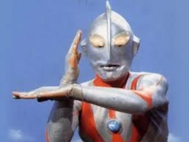

Tenho especial interesse por seriados japoneses antigos, dos clássicos tokusatsu que marcaram época. Os personagens que mais marcaram a minha infância foram Ultraman e Ultraseven. Outros que também pertenceram a minha época, Jaspion e Jiraiya, histórias de heróis em diferentes épocas.
Para saber mais desses heróis Clique aqui.
Aqui um especial tema de interesse e aprenda com quem faz. Assistir vídeos e curiosidades para aprender como resolver coisas de casa. Dicas e truques inteligentes para realizar reparos e consertos em sua própria casa.

Saiba mais sobre essas dicas e truques Clique aqui.
Tecnologia de Internet das Coisas no setor industrial. Pensar que no ambiente doméstico, objetos do dia a dia que ganham capacidade de "conversar" com a internet, de entreter, de integrar pequenas coisas como conectar ao som e tocar uma playlist. E na indústria, como seria o IOT? É facinante, máquinas conectadas trocando informações, de forma autônoma, sistemas integrados à robótica, ganho estratégico, diferencial de competitividade. É um universo a ser explorado!

Sobre IOT na Indústria Clique aqui.